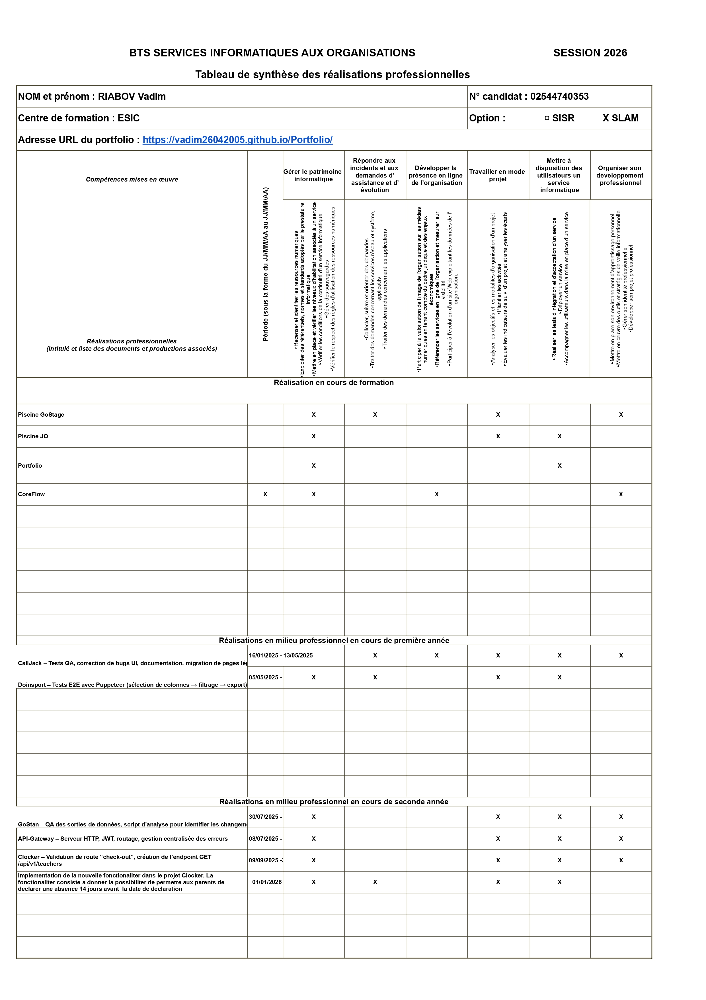

// A propos de moi
Etudiant a l'ecole informatique ESIC, passionne par le developpement Back-End.
J'aime concevoir des solutions serveur robustes et maintenables. Je suis toujours a la recherche de nouveaux defis techniques et de projets stimulants.
// Projet personnel
GoStage est un projet personnel realise en equipe pour mettre en relation etudiants et entreprises. L'objectif etait de creer une plateforme utile tout en experimentant la collaboration et les technologies web.
// Projets entreprise
Projets realises en alternance en entreprise : applications Back-End, tests automatises et integration d'APIs.
// Competences acquises
Langages & Back-End
Golang
Developpement d'API Back-End et services performants
PHP
Developpement Back-End et logique serveur
JavaScript
Developpement web dynamique et logique applicative
SQL
Gestion et manipulation de bases de donnees
PostgreSQL
Base de donnees relationnelle pour applications robustes
Dart
Langage moderne pour applications mobiles et web
Outils & Collaboration
GitHub
Versionning, collaboration et gestion de code en equipe
Postman
Tests d'API, verification des routes et debug des requetes
Trello
Interface de travail en equipe et suivi des taches
Framework & Gestion de projet
Bootstrap
Framework CSS responsive et moderne
Chef d'equipe
Coordination et gestion de projet en equipe
// Graphique des taches
Recapitulatif des projets et taches realisees en 1ere et 2eme annee (ecole et entreprise).

// Veille technologique
Applications business automatisées avec l’intelligence artificielle
Les outils business évoluent rapidement. Avant, un logiciel servait surtout à stocker et afficher des données. Aujourd’hui, avec l’IA, ces applications peuvent analyser, proposer des actions et automatiser des décisions métier.

1. Logiciel classique vs application IA
Un logiciel classique exécute des actions définies à l’avance. Une application IA apprend des données et aide à prendre de meilleures décisions.
- Logiciel classique : tableau de clients, historique, rapports
- Application IA : détection des risques, recommandations, automatisation
2. Le CRM intelligent
Un CRM intelligent est enrichi par l’IA. Il ne se limite pas à enregistrer les contacts, il priorise et assiste.
- Classement automatique des prospects
- Suggestion du meilleur moment de contact
- Génération de messages personnalisés
3. Comment l’IA analyse et décide
L’IA exploite les données pour identifier des tendances et déclencher des actions intelligentes.
- Prédire : probabilité d’achat
- Recommander : meilleure offre
- Automatiser : relances et tâches
4. Impacts concrets
- Gain de temps
- Décisions plus rapides
- Meilleures performances commerciales
- Expérience client améliorée
Conclusion
Les applications IA transforment les logiciels en outils proactifs. L’objectif est d’assister l’humain avec des décisions plus fiables.